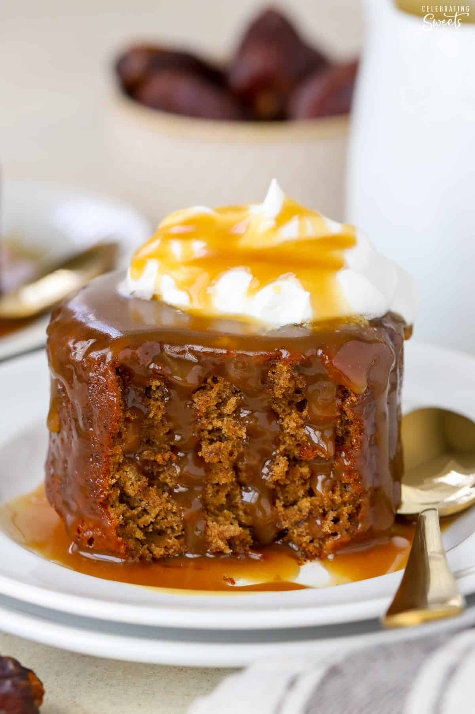

Sticky Toffee Pudding

Classic British Dessert for Date Lovers
This is a dessert made of soft and sweet date cakes soaked in a warm toffee sauce.
The cakes are served with whipped cream, ice cream, heavy cream, or custard.
This is a rich and comforting dessert that is perfect for fall, winter, and the holidays.
If you aren't a fan of dates I still encourage you to try this.
This cake doesn't have a strong date flavor, the dates primarily add moisture and sweetness.
After one bite of this dessert it easily became one of my favorite desserts of all-time.
It is incredible.
The Ingrediantes
- dates
- brown sugar
- molasses
- butter
- boiling water
- baking soda
- eggs
- pure vanilla extract
- all purpose flour
- baking powder
- salt
- heavy cream
Steps
- Preheat oven to 350°F.
- Finely chop the dates. You should have about 1 cup loosely packed.
Place the dates in a bowl and cover with boiling water and sprinkle with baking soda.
Stir, then allow the mixture to sit undisturbed for 20 minutes.
- Meanwhile, using a hand mixer or stand mixer fitted with the paddle attachment,
beat butter, brown sugar, and molasses until creamy and combined. Add the eggs,
one at a time, beating well between each addition and scraping the sides and bottom
of the bowl as needed. Beat in the vanilla.
- In a separate bowl combine flour, baking powder, and salt.
Add the flour mixture into the butter mixture and beat until combined,
scraping the sides and bottom of the bowl as needed.
- After the dates have soaked for 20 minutes, mash or puree the dates along with
the liquid. If the dates you used were moist you should be able to mash them
easily with a fork. If the dates were really dry it will likely be easier to
use an immersion blender or small food processor to puree
(they don't have to be completely smooth).
Transfer all of the date mixture into the cake batter and beat until combined.
- Grease ramekins (preferred)** or see notes for other pan sizes.
Transfer the batter to the prepared pans and smooth the top.
Bake until a toothpick inserted into the center comes out clean.
Depending on the size of your ramekins this can be anywhere from 20-25 minutes.
Be careful not to overbake. Place on a wire rack to cool.
- In a medium saucepan, melt the butter.
Add the cream, brown sugar, molasses, and salt.
Bring the mixture to a simmer, whisking occasionally, and simmer for 5-8 minutes.
Whisk in vanilla and set aside to cool slightly; it will thicken as it cools.
- While the cakes are still a little bit warm,
remove them from the ramekins/muffin tin and place them on a baking sheet or
a piece of foil or parchment paper. Note: the cakes will likely have a dome on top.
If desired, you can use a serrated knife to level off the top. I prefer to level
it off and serve the cakes upside down.
- Brush all sides of the cakes with the toffee sauce, reserving the rest of the sauce
for serving.
- Serve the cake warm, drizzled with extra toffee sauce.
Garnish with heavy cream, whipped cream, ice cream, and/or a sprinkle of
flaky sea salt.
Home